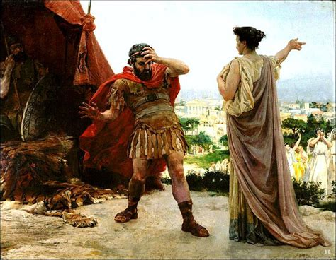
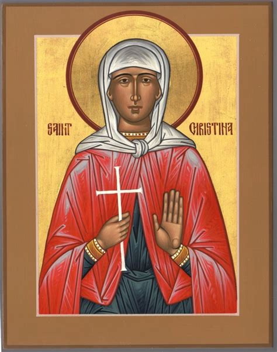
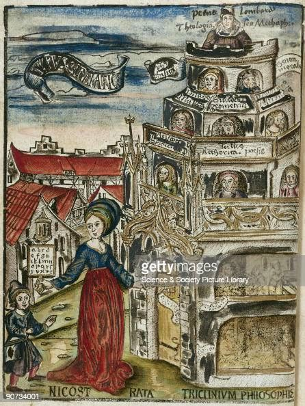
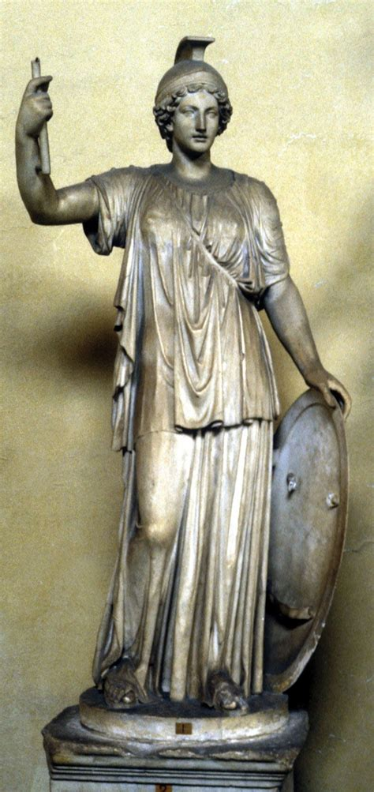
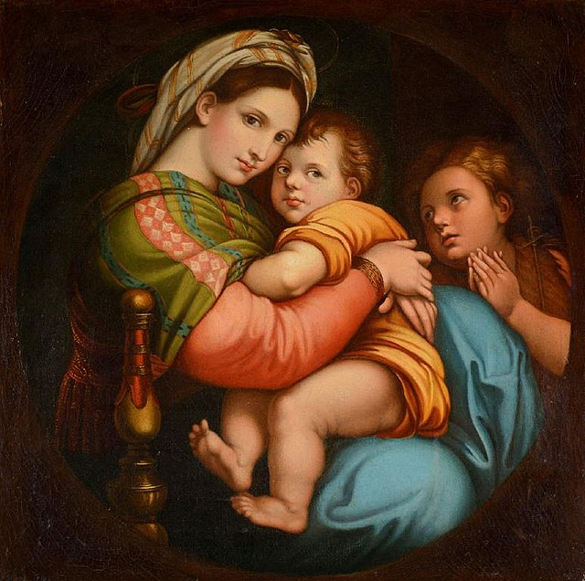

What Makes a Woman?
Is she an unfinished man? Is Nature “deeply ashamed when she sees that she has created such an imperfect body”? Heck no! Women are created in the image of God, and so ladies, don’t be ashamed! They are created from noble material, not crude matter. They have the authority of God to nurture, and we see that over and over again throughout history. Men may be the muscle of civilization, but women are the heart. If men are blunt, women are sharp. They consistently prove to be the real power. Here following will be a list of girls that prove they deserve respect—check your misogyny at the door!
5. Veturia of Rome
Image: José Garnelo's "Veturia and Coriolanus" (1893) via Pinterest
A noble lady and the mother of Gnaeus Marcius, she defended Rome from destruction. After her son was banished and exiled for not being able to please everyone, he became angry. Marcius was ready to take on Rome and teach them a lesson for what they’d done by marching on Rome with a group of rebels. In a moment of desperation, the women of Rome met with Veturia and told her what was up. Lady Veturia went to go and remind her son who he was, leading all the ladies. She stood in front of her son and begged him to make peace. Like the good son he was, he replied, “A mother should not have to beg her son: she should command him.” He turned around and all was well because she had a mother’s heart and raised her son right.
4. Saint Christine
Image: Wooden statue of St. Christine by Ferdinand Stuflesser 1875
Okay, maybe it’s a bit cheesy to pick someone who shares my name, but there is nothing cheesy about this queen. She ignored her father Urban’s idols and found the true Lord. She once sold them to care for the poor and needy she saw around her. Because she defended the Lord even to terrible torture, she was baptized by the Lord Jesus Christ Himself. She then fought against the idol-worshipping judges that tried to take her dignity. With an indomitable spirit and God’s grace, she was protected from deadly serpents and brought a man back to life. For praising God, her tongue was cut out, and she spat what was left in the face of the tyrant Julian. It doesn’t get more girlboss than that. She had a theophany and died a martyr. She was firm and steadfast her whole life, always looking to help others because she was locked in on serving God.
3. Nicostrata of Arcadia
Image: "Typus Gramatica" showing Nicostrata, Getty Images
God gave Nicostrata, sometimes known as Carmentis, great gifts of knowledge, making her an academic weapon. It was rumored by some of her time that her lover was the god Mercury because she was so smart. She laid the foundation for Rome not just by settling in Mount Palatine, but also its laws. She made Italy the cradle of all laws—momma energy for real. She’s also the mother of the Latin alphabet and its grammar, the ones we use today! Without her sharp wisdom, we would not have the world we do today.
2. Minerva of Greece
Image: Statue of Minerva – Britannica.com
Minerva, sometimes known as Pallas, was a girl so smart, the other Greeks sometimes thought she was a goddess walking among them. This girl could do anything. She invented the Greek alphabet with her sharp mind. Speaking of sharp, she invented sheepshearing and weaving, keeping us warm with all the great fabrics we have today. She discovered oil to keep us warm and give us light and wind instruments to entertain us. Reinvent the wheel? This girl invented the cart and wagon to make carrying things easier. She kept knights and soldiers safe with iron and steel armor using new furnaces and metallurgy techniques. We need more women like Minerva because she gave us so many wonderful things we can’t live without. She spent her life making things to take care of us.
1. Mother Mary
Image: "Madonna della Seggiola" by Raphael – Wikimedia Commons
We can’t end a list about the women who best embody the nurturing spirit and the authority of God without talking about Mother Mary. She is the reason that Salvation came to the children of men! Even if all other women were wicked, she has the light to eclipse their evil, and did she let it shine! She’s part of your day today, just as the angel Gabriel hailed her then, so too you hail her now. She is the ideal woman because she raised our Lord and prepared Him to save us from our sins.
Why This Order?
I started off with Veturia because she sets the standard for being there for your country when they need you and showing others what is right. We build up with Saint Christine because she gave her life to serving others in her small way, even at the face of death. Nicostrata of Arcadia mothered law and language, then Minerva of Greece added progress and protection. At the top of it all, we have the Queen of Heaven, Mother Mary, the nurturer of our Salvation. All these women show what it means to be a woman: smart and sharp to bring us forward and never leaving us behind with their care. They grew our world with one good deed at a time, and so can any woman. They’re all made in the image of God after all. Share this if you agree and let me know: who’s on your top five?